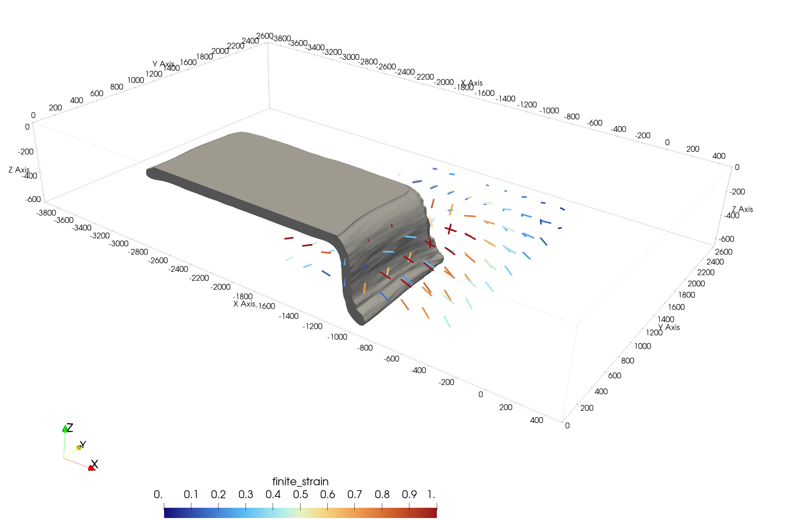

LaMEM Integration
DRex.jl can be coupled to 3D geodynamic simulations run with LaMEM via an optional package extension that loads automatically when the trigger packages are imported:
using LaMEM, GeophysicalModelGenerator, WriteVTK
using DRex # DRexLaMEMExt loads automaticallyHow it works
- Load snapshots — reads all LaMEM output timesteps (velocity gradient tensor and optionally velocity) and converts units to km / Myr / (1/Myr).
- Backtrack positions — starting from user-specified target locations at the final snapshot, positions are advected backward through the velocity field to find the material source at the first used snapshot.
- Seed tracers —
create_tracersplacesMineralparticles with random initial orientations at the backtracked source positions. - Evolve CPO —
evolve_cpo!advects tracers forward and integrates the DRex ODE at each step; all tracers run in parallel viaThreads.@threads. - Write ParaView output — a
.pvdtime-series and per-step.vtpfiles are written with the following point data:
| Field | Type | Description |
|---|---|---|
fast_axis | 3-vector | Bingham-mean olivine a-axis direction |
m_index | scalar | Texture strength (0 = random, 1 = single crystal) |
finite_strain | scalar | Largest principal stretch − 1 |
deformation_gradient | 3×3 tensor | Full deformation gradient F |
deformation_gradient is the final accumulated F for each tracer (the value at the end of the simulation). It is written at every time step in the .pvd series but does not change between frames — only the CPO fields (fast_axis, m_index) and positions vary per snapshot. F and CPO are different quantities: F describes the bulk macroscopic deformation of a material parcel, whereas CPO tracks the orientations of individual grains within it.
All-in-one function
compute_cpo_from_lamem does everything in a single call:
tracers, snaps = compute_cpo_from_lamem(
"Subduction_3D_CPO", "Subduction_3D_CPO";
target_positions = [[x, y, z], ...], # or: initial_positions
output_dir = "Subduction_3D_CPO_tracers",
skip_initial_steps = 5,
drex_params = drex_params,
n_grains = 1000,
n_substeps = 5,
fabric = olivine_A,
)Time-dependent vs steady-state mode
Time-dependent (default): reads velocity gradients from every snapshot.
Steady-state: assumes a single snapshot's velocity field is constant in time, useful for testing CPO development or avoiding loading hundreds of files:
tracers, snaps = compute_cpo_from_lamem(
sim_name, sim_dir;
target_positions = [...],
steady_state_step = 150,
steady_state_duration = 20.0, # Myr
steady_state_n_steps = 200,
)Position specification
Provide exactly one of:
| Keyword | Description |
|---|---|
target_positions | [x,y,z] km at the last snapshot — positions are backtracked to find the source |
initial_positions | [x,y,z] km at the first snapshot — CPO is evolved forward directly |
Lower-level API
snaps = load_snapshots(sim_name, sim_dir)
src = backtrack_positions(target_positions, snaps; n_substeps=5)
tracers = create_tracers(src; n_grains=1000, seed=42, fabric=olivine_A)
evolve_cpo!(tracers, drex_params, snaps; advect=true, n_substeps=5)Visualising in ParaView
File → Open → <output_dir>/cpo_tracers.pvdUseful filters:
- Glyph → Arrow oriented by
fast_axis, scaled bym_index— fast axis direction and strength - Threshold on
m_index— hide near-random tracers (M < 0.05) - Calculator on
deformation_gradient— extract individual F components or principal stretches
Prerequisites
The LaMEM simulation must be run with these output flags in the .dat file:
out_vel_gr_tensor = 1
out_velocity = 1See examples/LaMEM/ for a complete 3D subduction example.
